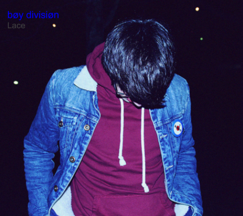

Design a Band Challenge
Challenge Info
This project is for us to learn design thinking. Design thinking is necessary for many different jobs and is a great skill to have.
DEEP thinking is a 4-step process in which you create content. The first step is "discover." Look at different versions of the kind of content you're trying to creat (in this case a band and an album including an album cover). What do they all have in common? Why do people like it so much? The next step is "empathy". Ask those who you are making the content for what they want to see and what they would prefer. What kind of colors do you prefer to see? Do you like abstract or realistic art on the covers? How bout fonts? Seriff or San Seriff? Third step is to "expirement." USing the data you collected try to create content with those aspects. The last step is to "produce." Finish your expirement. Do a last draft, choose the one you believe others will like the most based on your data. Using this process we had to create our own band, including a biography and a cover album.
When I did these steps the results I got were as following:
- The most prefered colors were blues and purples
- San Serif was preferred over Serif
- Realistic art was liked more than abstract
Album Cover
Lace is a trio of friends from the small town of Topeka, Kansas. The band is made up by Cherry Jones, John "Smitty" Nelson, and Luna "La Reyna" Reyes. These small Kansas residents started out as a small band and grew to a band with a following with thousands of people all over the world.
Cherry Jones, Smitty Nelson, and Luna Reyes created the band when they were assigned to a group projet in ninth grade. Their initial name was "Plastic" but they were forced to change the name in order to not face legal issues.
The band is musically influenced by bands such as Frnkiero andthe Cellabration, The Beatles, and solo artist Jake Bugg. The band can not be placed under a single genre because of their diverse music. They produce stuff ranging from punk to classic rock (except country. Never country.)
Frnkiero andthe Cellabration
This is the album cover for the album .Stomachaches. by Frnkiero andthe Cellabration. I feel like once you listen to the album you realize the relation between the album cover, the actual content - songs, and the band name. It is really kind of an irony because the "cellabration" most likely refers to celebration, but the cover and the actual content aren't happy at all. This album is a collection of stories. When I listen to this album I think of rainy days, cobwebs, and the smell of coffee, and the album cover matches with that. The album cover shows a cob web outside in a field of some sort. The light pink font of .Stomachaches. kinda matches with the cover art and ties it together.